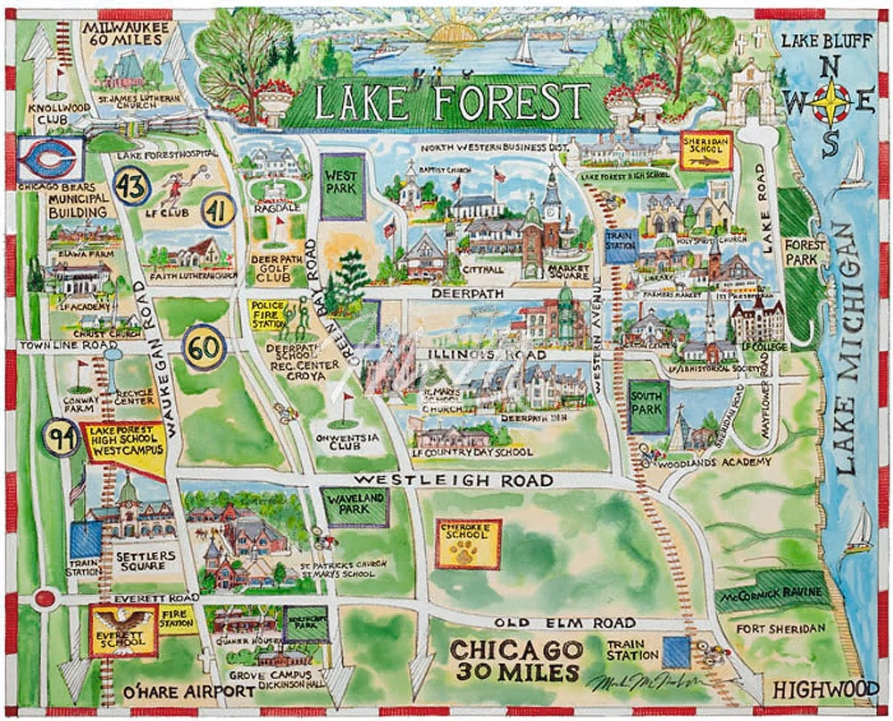

Lake Forest, Illinois - Interactive Map
About This Map
This interactive map showcases a handful of meaningful locations from my hometown of Lake Forest, Illinois. Each marker represents a place that contributes to the unique character and community of this North Shore suburb.
Features:
- Custom Mapbox basemap design
- Color-coded markers by location type (parks, restaurants, schools, cultural sites, etc.)
- Interactive pop-ups with images and personal descriptions
- Geocoded addresses using the Mapbox Geocoding API
- Built with Python using Folium and Pandas
Click on any marker to see the location's image and my personal thoughts about why it's special!
Reflection
Design Inspiration
For the personalized map of my hometown, Lake Forest, Illinois – a suburb of Chicago - I decided to draw artistic inspiration from one of my favorite local artists, Mark McMahon. He is very well known in my area for his loose, abstract, and watercolor-esque approach to painting busy scenes of the north Chicago suburbs and the beauty of those communities.
Growing up in such a beautiful town surrounded by creativity, I saw McMahon’s work displayed in my elementary and high school, along with our local library, and as a mural in a local restaurant. His work reminds me of home, and I took inspiration for the color choices on my personal map from the map he painted of the Lake Forest area, which you can view below. I wanted my map to feel whimsical yet resemble the realness of the earth.

The text style is pretty basic and straightforward, as I wanted all types of viewers to easily access my map and its detailing. I left the font choice basic and clean for this reason. Although Lake Forest and its surrounding communities are situated on very flat land, I was able to see the mountains' depths when I zoomed into states like Colorado and Nevada. I enjoyed understanding the ins and outs of the Mapbox platform and how detailed one can truly make a map.
Cartographic and Technical Challenges
Throughout my experience, both in class and on my own time learning Mapbox, I encountered various challenges, both technical and cartographic, as I tried to understand the software and learn from my mistakes. It was easy to get caught up in minor details and to feel confused or frustrated when I colored the wrong type of “land” or “road.” To overcome this issue, I found it best to keep the detailing in my map very straightforward and easy to read. I look forward to asking more questions in class to fully grasp this platform’s capabilities in the future.
Additionally, I’m currently struggling with how to make the text on roads and in town areas larger when users zoom in. I was having confusion bouncing between both Mapbox and VS Code when applying minor edits to my map, including trying to make the text bigger. I am unsure of this answer at the moment, but when I preview my map in Mapbox, the road and town section text appears larger and easier to read than when displayed in my VS Code portfolio. I’m hopeful that with more experimentation, I can learn how to fix these mistakes.
To aid my confusion and integration of the Mapbox platform into VS Code, I prompted Claude Sonnet 4.5 with some questions and goals, and found its advice extremely helpful. At first, I had some trouble getting my CSV file to display on top of the Mapbox map I had created. Claude Sonnet 4.5 helped me merge those two files together and make the map interactive by zooming and clicking on specific points. I also troubleshooted by reviewing the changes AI made before hitting “apply” to improve the accuracy of the messages it was giving me.
I found it helpful to ask the AI tool why it made specific changes and to read all of its feedback so I could learn how to manually complete those tasks on my own next time. I think in terms of intentionality, I really have hope for where this map is going. I like my color choices a lot and also believe the places I handpicked in my community positively reflect my hometown’s atmosphere and what has shaped me into who I am. I’m excited to keep learning more from Mapbox and to make edits to this map down the road.
Technical Implementation
This project was built using Python with the following key components:
- Data Collection: Created a CSV dataset with 67 Lake Forest locations including names, addresses, types, descriptions, and image URLs
- Geocoding: Used the Mapbox Geocoding API to convert street addresses into latitude/longitude coordinates
- Visualization: Built the interactive map using Folium, a Python library for creating Leaflet.js maps
- Custom Basemap: Integrated my custom Mapbox Studio style as the basemap tiles
- Interactivity: Implemented custom HTML popups with images, descriptions, and styled elements
- Symbolization: Applied different marker colors and icons based on location categories